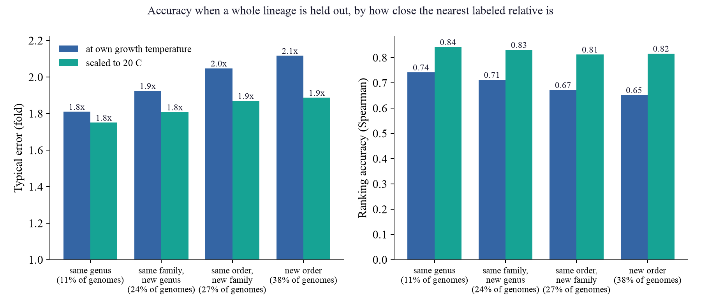
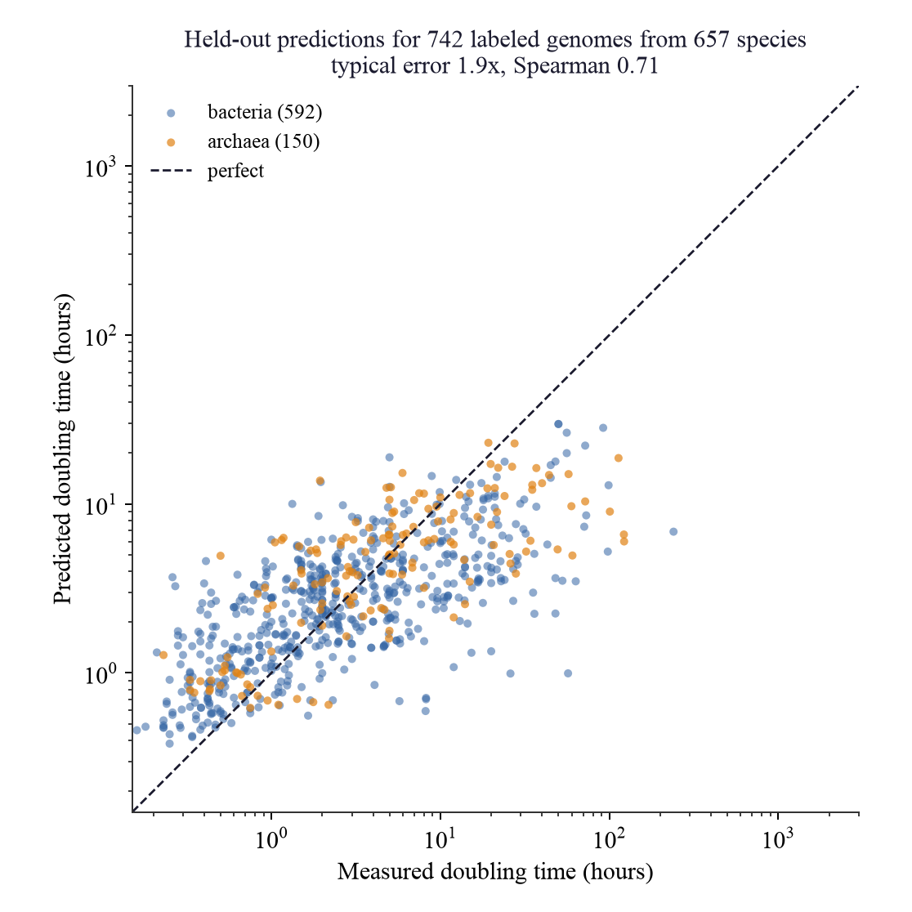
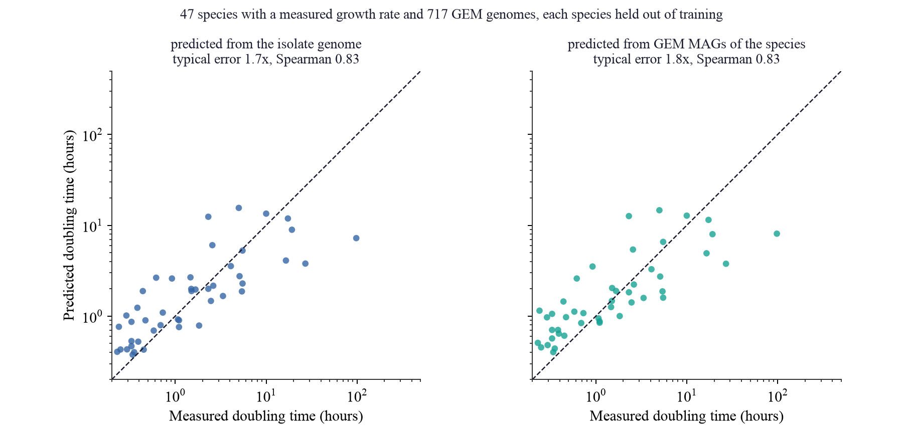
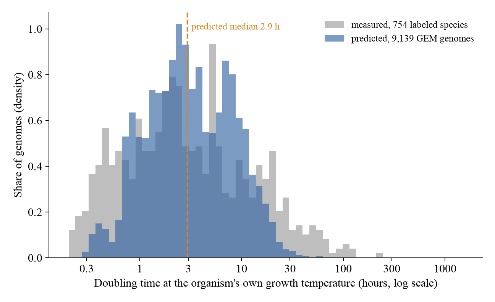
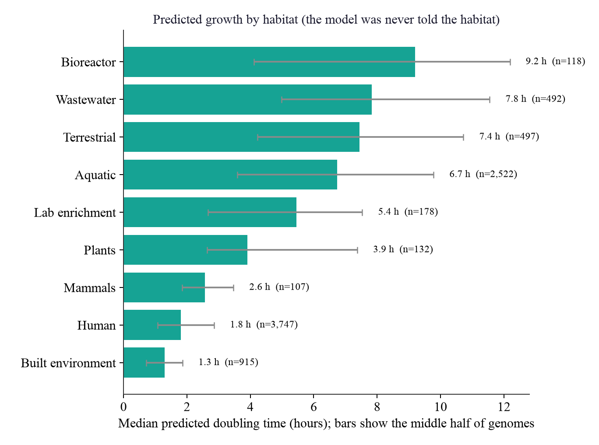
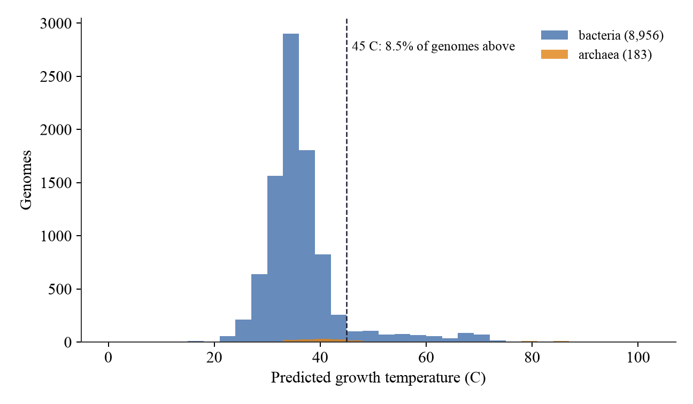

This report covers predicted growth rates for the 9,143 high quality genomes in the GEM catalog, genomes that have never had a growth rate measured in a lab. We produced a prediction for 9,139 of them. This version replaces the first one, which should not be used. The next section explains why.
The first predictions gave the model information about where each organism sits on the tree of life, and about its 16S gene, in a different numerical form from the one the model had been trained on. The model still produced numbers, but they were squeezed toward fast growth: the median predicted doubling time was 0.6 hours against 7 hours for the species it was trained on, no genome was predicted to take longer than 24 hours, and gut microbes looked no different from ocean microbes. We found this while rebuilding the pipeline. It is fixed, and the prediction script now stops if its inputs fall outside the range of the training data.
The file hq_genome_predictions.csv has one row per genome. The main columns are:
Six kinds of information are taken from each genome's DNA: its size, GC content and number of tRNA genes; how strongly its ribosomal protein genes favor particular codons (codon usage bias, a known signature of fast growth, measured both with our own statistic and with the statistics of the published gRodon method); the share of its proteins made of the amino acids I, V, Y, W, R, E and L, which rises with growth temperature; which genes for making a living it carries (energy metabolism such as methanogenesis, sulfate reduction, ammonia oxidation, nitrogen fixation and photosynthesis, plus the density of transporters, regulators, motility and catalase genes); where it sits on the tree of life; and its 16S gene. Genes were predicted directly from the DNA, so no annotation was needed, and the same steps were applied to the species with measured growth rates and to the GEM genomes.
A model was trained on 754 genomes from 669 species with a measured growth rate (598 bacterial
genomes and 156 archaeal genomes), mostly from the compilation by Madin and colleagues (2020), plus 8 strains
from lineages that compilation lacks (ammonia-oxidizing archaea, Nitrospira and other nitrite oxidizers, a
verrucomicrobial methanotroph), each checked against the original paper and paired with the genome of the measured
strain. 58 of the labeled genomes double more slowly than once a day. 10 values from the compilation were left
out because they are clearly not maximal growth rates (for example methanotroph values of several days from a study of growth at
low temperature); the list and the evidence are in data/curated/label_exclusions.csv. It predicts three things: the doubling
time at the organism's own growth temperature, the growth temperature itself, and the doubling time rescaled to 20 C.
Growth temperature matters because rescaling multiplies a hot-growing organism's doubling time by a large factor, about 4 for
organisms growing at 30 to 45 C, 16 at 45 to 60 C and 48 at 60 to 80 C, so a model can look accurate on the rescaled value
partly by recognizing hot organisms. We therefore report both values, and judge the model mainly on the first.
Not every genome had every input. 7,297 genomes had all four and got the full model. The rest were predicted with whichever inputs they had, and the table says which. For 11% of genomes the nearest labeled relative is in the same genus, for 24% in the same family, for 27% in the same order, and 38% have no labeled relative at order level. These shares are worst cases, because GEM uses older taxonomic names than the labeled species and a renamed group looks more distant than it is.
Accuracy was never measured on a species the model had seen. We also left out whole genera, families and orders, because most GEM genomes have no close relative among the species with measured rates, and accuracy falls as the nearest relative gets more distant. The table gives the numbers for each situation, using the full model.
| Nearest labeled relative | Share of genomes | Typical error | Ranking (Spearman) | 80% range around the prediction | Typical error, 20 C value | Ranking, 20 C value |
|---|---|---|---|---|---|---|
| same genus | 11% | 1.8x | 0.74 | x0.34 to x3.50 | 1.8x | 0.84 |
| same family, new genus | 24% | 1.9x | 0.71 | x0.30 to x3.38 | 1.8x | 0.83 |
| same order, new family | 27% | 2.0x | 0.67 | x0.27 to x4.17 | 1.9x | 0.81 |
| new order | 38% | 2.1x | 0.65 | x0.26 to x4.27 | 1.9x | 0.82 |

In plain terms, a typical prediction at the organism's own temperature is off by a factor of about 1.8 when a genus relative is known and about 2.1 when none is, and the ranking of genomes from fast to slow is moderately reliable, better for close relatives. The predictions are best used to rank genomes and to find groups that are likely fast or slow, not as exact doubling times.
Two further checks. First, we trained on the original species only and predicted 294 bacterial species it had never seen: typical error 2.0x at the organism's own temperature (ranking 0.63) and 1.8x for the 20 C value (ranking 0.79). Second, because the GEM genomes are assembled from environmental samples and not isolates, we checked the pipeline on 717 real GEM genomes from 47 species that have a measured growth rate, each species held out of training. Typical error was 1.8x from the GEM genomes against 1.7x from the isolate genomes of the same species (this check used the model without 16S so that more species qualify), so assembling genomes from the environment costs some accuracy, while the ranking is almost unchanged.


The model compresses the range. Among the held-out species, 8% have a measured doubling time above 24 hours but only 0.5% are predicted to, and a tenfold change in the measured time shows up as about a 2.8-fold change in the prediction. It ranks very slow species above most others (area under the curve 0.84) but does not say how slow they are. Where it does predict long times, that is mostly because a close relative is known to grow slowly: 8 of the 19 held-out predictions above 15 hours are in one family, Anaerolineaceae, and 74% of those are truly slower than 24 hours, while only 18% of predictions between 5 and 15 hours are. We added measured slow growers and the energy-metabolism genes to address this. Scored on the same test species, with whole species held out the typical error went from 1.83x to 1.83x and the area under the curve of a separate slow-growth classifier from 0.70 to 0.79. For organisms with no labeled relative in the same order there was no gain: typical error was lower in 0 of 3 runs and the slow-growth ranking better in 0 of 3 (typical error 2.12x to 2.29x, area under the curve when ranking by the prediction 0.79 to 0.76), so they do not solve slow growth for new lineages. What did help was replacing our single codon usage statistic with the fuller set from the published gRodon method: with whole orders held out, typical error went from 2.29x to 2.18x and the area under the curve for picking out organisms slower than 24 hours from 0.74 to 0.79, in every one of ten repeats, and the current model includes them. With whole orders held out, a calibrated chance of being slower than 24 hours is better than guessing from the overall share, though not by much (Brier score 0.065 against 0.072). Of the GEM genomes predicted to take longer than a day, 32% carry one of the energy-metabolism markers, against 18% of all genomes. The model still rarely predicts more than a day for a new lineage, and other fixes (other losses, reweighting rare values, stretching the predictions to the measured spread) did not recover slow growth without making other predictions worse. Read the predictions as a relative score, a long prediction as a sign that the genome resembles known slow growers, and a short one as no guarantee of fast growth.
We also compared the model with reimplementations of the two published tools, refit on exactly the same data and the same held-out splits: gRodon, which predicts from codon usage bias alone, and Phydon, which blends that with the growth rates of the nearest relatives on the tree, weighting the relatives less the further away they are. The table gives the typical error and, in brackets, the ranking accuracy, averaged over five repeats. Counting each repeat separately, the model had the lower typical error in 30 of 30 comparisons with Phydon-style and 30 of 30 with gRodon-style. The gap with Phydon-style widens for organisms without close relatives, because its relative-based part has little to go on there. gRodon-style does not depend on relatives, so it holds up better than Phydon-style for those organisms, but it is still behind on both typical error and ranking. These are reimplementations refit on our data, not the published fits, and our codon statistic is a single measure where Phydon's full mode uses three, so this compares the methods rather than the released software.
| Held out, target | This model | Phydon-style | gRodon-style |
|---|---|---|---|
| new species, 20 C value | 1.74x (0.84) | 2.06x (0.75) | 2.65x (0.59) |
| new species, own temperature | 1.80x (0.74) | 2.11x (0.59) | 2.44x (0.32) |
| new genus, 20 C value | 1.80x (0.83) | 2.16x (0.72) | 2.64x (0.58) |
| new genus, own temperature | 1.92x (0.71) | 2.40x (0.48) | 2.48x (0.31) |
| new order, 20 C value | 1.89x (0.82) | 2.43x (0.65) | 2.66x (0.58) |
| new order, own temperature | 2.09x (0.66) | 2.79x (0.31) | 2.52x (0.29) |
We also ran the released gRodon and Phydon software on the same genes and the same held-out species (for Phydon, each test species was removed from its built-in training data first). The released tools are given the measured growth temperature, which this model is not given and has to predict. Without the temperature, released gRodon reaches 2.40x (ranking 0.52) against 1.86x (ranking 0.71) for this model. With the temperature, released gRodon reaches 1.92x (ranking 0.73) and Phydon 1.85x (ranking 0.70), while this model given the same temperature reaches 1.74x (ranking 0.76). So on equal inputs this model has the lower typical error and ranks species better. The comparison in the table above, against our reimplementations, overstates the gap: the real tools are stronger than the reimplementations.
Weak spots. Ranking among fast growers (doubling time under 5 hours) is the weakest part. Codon usage bias helped most there, but it is still only moderate. Archaea are covered by far fewer labeled species than bacteria, mostly hyperthermophiles and methanogens, and groups with no labeled archaeal relative are less reliable than the numbers above.
The predicted doubling time at the organism's own growth temperature has a median of 2.9 hours (middle 90% from 0.7 to 15), against 2.5 hours (middle 90% from 0.3 to 34) measured for the labeled species. The spread is much narrower for the reason given above: when the model is unsure it pulls the prediction toward the middle, so the spread of the predictions understates the spread of real growth rates. About 8% of genomes are predicted to grow at 45 C or above. As a check on the growth temperature, which the model was not told anything about, 72% of the 396 genomes from hot spring and other thermal habitats are predicted to grow at 45 C or above, against 1% of the human-associated genomes. The second number is not zero, so a few mesophiles are being called hot. Treat the hot_organism flag as a hint, not a measurement.

By habitat, genomes from the built environment habitat group are predicted fastest (median 1.3 hours) and those from bioreactor slowest (9.2 hours). The model was never told the habitat. By family, among families with at least 25 genomes the fastest are Enterobacteriaceae (0.4 h), Streptococcaceae (0.5 h), Thermaceae (0.7 h), Coriobacteriaceae (0.8 h), and the slowest are Gemmataceae (19 h), SG8-4 (17 h), UBA3495 (16 h), Pedosphaeraceae (13 h). Thermaceae grow hot, so their short time is at their own high temperature, and the 20 C column ranks them differently.


hq_genome_predictions.csv, the full table, 9,139 genomes.fastest10.csv and slowest10.csv, the extremes.charts/, the figures in this report.calibration_data_labeled_species.csv, the held-out predictions behind Figure 2.scripts/ in the repository, see research_log.md.superseded/, the first version, kept for the record and not to be used.